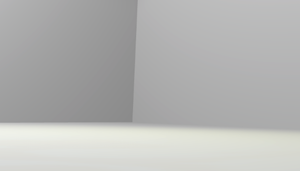
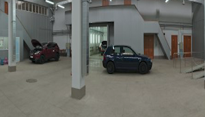

Home
Configuratore
Chi Siamo
Contatti
Dove siamo
Configura la tua
Seleziona materiale scocca
Seleziona materiale sella
Seleziona materiale manopola
Seleziona sfondo
 
Accendi/spegni luce ambientale:
Mostra posizione luce principale:
€ 1300
Acquista